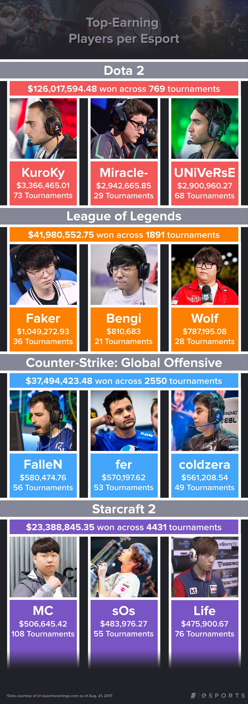

The Top-Earning Players per Esport
Infographic: the Top-Earning Players per Esport With The International yet again raising the stakes when it comes to prize pools in large-scale esports tournaments, theScore esports wanted to compare the lifetime winnings of the top three players across each of the four biggest esports on www.esportsearnings.com. According to the site, the four top esports in terms of prize money earned are: Dota 2, League of Legends, CS:GO and StarCraft II.
